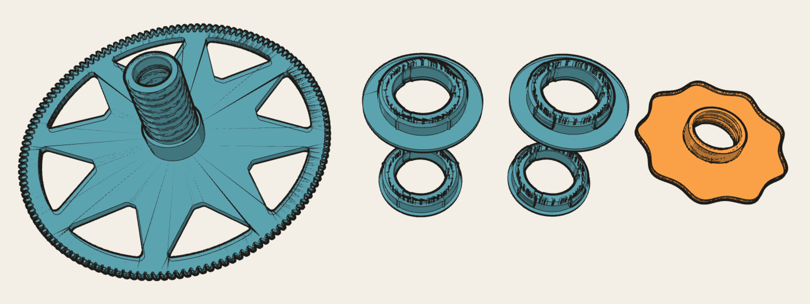

KRAKEN FOR THE BAMBU LAB AMS · CARDBOARD AND HARD PLASTIC SPOOLS
Kraken spool rings, nut and gear generator
Repro's Kraken tools: centering rings that seat a spool on the Kraken spool holder, sized to the spool's centre hole from 45 to 95 mm in 0.1 mm steps, with pentagon points for cardboard hubs or spring fingers for hard plastic hubs; a Kraken spool nut with a thicker flange; and a spool gear with your own spoke pattern. The STL files are generated in your browser.

01 / WHICH SIZE TO PRINT
Cardboard spool: print a pentagon pair. Hard plastic spool: print a spring pair. Measure the spool's centre hole with calipers in a few directions, take the smallest reading, and print that size or up to 0.9 mm below it.
The round support surface sits 0.1 mm inside the nominal radius, so a ring larger than the hole will not enter. The five pentagon points stand 0.7 mm proud of the nominal radius, so they still grip a hole up to about 1 mm wider than the nominal size. Print one gear-side ring and one cap-side ring per spool.
| Cardboard spool | Centre hole | Ring to print | Where the figure comes from |
|---|---|---|---|
| Polymaker | 55.5 mm | 55.5 mm pair | Measured for this remix |
| Elegoo Rapid PETG | 53.4 mm | 53.4 mm pair | Measured for this remix |
| Bambu Lab cardboard spool | about 55 mm | 55 mm | Community report |
| eSun | 52–54.3 mm, varies | Measure; 52 or 54 mm | Community reports disagree (52 mm, 54.3 mm) |
| Overture, Duramic | about 53.5 mm | 53 mm or the 53.4 mm pair | Inferred from a bushing designed for them |
| Other brands | 52–58 mm is typical | Measure first, then generate | — |
Spool makers change cores between batches. Treat the brand column as a starting point and the caliper reading as the deciding figure. Physical fit has been checked only where the table says measured.
02 / READY-MADE SIZES
Pairs published in Repro's kraken-remix-ogAMS repository. The generator below produces the same geometry for these sizes. 3MF and STL hold geometry only, flange or lip on Z0; STEP files are gzip-compressed faceted solids.
Cardboard spools: pentagon rings. Five points stand 0.7 mm past the hole and bite into the cardboard.
Hard plastic spools: spring rings. A plastic hub does not give, so the spigot is round at 0.2 mm under the hole and four spring fingers bow 0.2 mm past it. They hold the ring in the hub when the gear shaft comes out.
Flange sets. Normal: 2.2 mm gear-side flange and 0.6 mm cap-side lip. Skinny: 0.4 mm on both sides, for holders where the extra 2.0 mm of stack does not fit. humebeam's original 0.4 mm cap lip is fragile: it tends to break during bed removal and handling.
Cardboard spools · brand sizes
| Spool hole | Gear side · 2.2 mm flange | Cap side · 0.6 mm lip |
|---|---|---|
| 55.5 mm · Polymaker | 3MF · STL · STEP.gz | 3MF · STL · STEP.gz |
| 53.4 mm · Elegoo Rapid PETG | 3MF · STL · STEP.gz | 3MF · STL · STEP.gz |
Cardboard spools · stock sizes, 45–95 mm
Each stock pair keeps the holder core of humebeam's ring of the same size. The last column lists the measured holes each ring suits.
| Ring | Gear side · 2.2 mm flange | Cap side · 0.6 mm lip | Smallest hole reading |
|---|---|---|---|
| 45 mm | 3MF · STL · STEP.gz | 3MF · STL · STEP.gz | 45.0–45.9 mm |
| 46 mm | 3MF · STL · STEP.gz | 3MF · STL · STEP.gz | 46.0–46.9 mm |
| 47 mm | 3MF · STL · STEP.gz | 3MF · STL · STEP.gz | 47.0–47.9 mm |
| 48 mm | 3MF · STL · STEP.gz | 3MF · STL · STEP.gz | 48.0–48.9 mm |
| 49 mm | 3MF · STL · STEP.gz | 3MF · STL · STEP.gz | 49.0–49.9 mm |
| 50 mm | 3MF · STL · STEP.gz | 3MF · STL · STEP.gz | 50.0–50.9 mm |
| 51 mm | 3MF · STL · STEP.gz | 3MF · STL · STEP.gz | 51.0–51.9 mm |
| 52 mm | 3MF · STL · STEP.gz | 3MF · STL · STEP.gz | 52.0–52.9 mm |
| 53 mm | 3MF · STL · STEP.gz | 3MF · STL · STEP.gz | 53.0–53.9 mm |
| 54 mm | 3MF · STL · STEP.gz | 3MF · STL · STEP.gz | 54.0–54.9 mm |
| 55 mm | 3MF · STL · STEP.gz | 3MF · STL · STEP.gz | 55.0–55.9 mm |
| 56 mm | 3MF · STL · STEP.gz | 3MF · STL · STEP.gz | 56.0–56.9 mm |
| 57 mm | 3MF · STL · STEP.gz | 3MF · STL · STEP.gz | 57.0–57.9 mm |
| 58 mm | 3MF · STL · STEP.gz | 3MF · STL · STEP.gz | 58.0–58.9 mm |
| 59 mm | 3MF · STL · STEP.gz | 3MF · STL · STEP.gz | 59.0–59.9 mm |
| 60 mm | 3MF · STL · STEP.gz | 3MF · STL · STEP.gz | 60.0–60.9 mm |
| 61 mm | 3MF · STL · STEP.gz | 3MF · STL · STEP.gz | 61.0–61.9 mm |
| 62 mm | 3MF · STL · STEP.gz | 3MF · STL · STEP.gz | 62.0–62.9 mm |
| 63 mm | 3MF · STL · STEP.gz | 3MF · STL · STEP.gz | 63.0–63.9 mm |
| 64 mm | 3MF · STL · STEP.gz | 3MF · STL · STEP.gz | 64.0–64.9 mm |
| 65 mm | 3MF · STL · STEP.gz | 3MF · STL · STEP.gz | 65.0–65.9 mm |
| 66 mm | 3MF · STL · STEP.gz | 3MF · STL · STEP.gz | 66.0–66.9 mm |
| 67 mm | 3MF · STL · STEP.gz | 3MF · STL · STEP.gz | 67.0–67.9 mm |
| 68 mm | 3MF · STL · STEP.gz | 3MF · STL · STEP.gz | 68.0–68.9 mm |
| 69 mm | 3MF · STL · STEP.gz | 3MF · STL · STEP.gz | 69.0–69.9 mm |
| 70 mm | 3MF · STL · STEP.gz | 3MF · STL · STEP.gz | 70.0–70.9 mm |
| 71 mm | 3MF · STL · STEP.gz | 3MF · STL · STEP.gz | 71.0–71.9 mm |
| 72 mm | 3MF · STL · STEP.gz | 3MF · STL · STEP.gz | 72.0–72.9 mm |
| 73 mm | 3MF · STL · STEP.gz | 3MF · STL · STEP.gz | 73.0–73.9 mm |
| 74 mm | 3MF · STL · STEP.gz | 3MF · STL · STEP.gz | 74.0–74.9 mm |
| 75 mm | 3MF · STL · STEP.gz | 3MF · STL · STEP.gz | 75.0–75.9 mm |
| 76 mm | 3MF · STL · STEP.gz | 3MF · STL · STEP.gz | 76.0–76.9 mm |
| 77 mm | 3MF · STL · STEP.gz | 3MF · STL · STEP.gz | 77.0–77.9 mm |
| 78 mm | 3MF · STL · STEP.gz | 3MF · STL · STEP.gz | 78.0–78.9 mm |
| 79 mm | 3MF · STL · STEP.gz | 3MF · STL · STEP.gz | 79.0–79.9 mm |
| 80 mm | 3MF · STL · STEP.gz | 3MF · STL · STEP.gz | 80.0–80.9 mm |
| 81 mm | 3MF · STL · STEP.gz | 3MF · STL · STEP.gz | 81.0–81.9 mm |
| 82 mm | 3MF · STL · STEP.gz | 3MF · STL · STEP.gz | 82.0–82.9 mm |
| 83 mm | 3MF · STL · STEP.gz | 3MF · STL · STEP.gz | 83.0–83.9 mm |
| 84 mm | 3MF · STL · STEP.gz | 3MF · STL · STEP.gz | 84.0–84.9 mm |
| 85 mm | 3MF · STL · STEP.gz | 3MF · STL · STEP.gz | 85.0–85.9 mm |
| 86 mm | 3MF · STL · STEP.gz | 3MF · STL · STEP.gz | 86.0–86.9 mm |
| 87 mm | 3MF · STL · STEP.gz | 3MF · STL · STEP.gz | 87.0–87.9 mm |
| 88 mm | 3MF · STL · STEP.gz | 3MF · STL · STEP.gz | 88.0–88.9 mm |
| 89 mm | 3MF · STL · STEP.gz | 3MF · STL · STEP.gz | 89.0–89.9 mm |
| 90 mm | 3MF · STL · STEP.gz | 3MF · STL · STEP.gz | 90.0–90.9 mm |
| 91 mm | 3MF · STL · STEP.gz | 3MF · STL · STEP.gz | 91.0–91.9 mm |
| 92 mm | 3MF · STL · STEP.gz | 3MF · STL · STEP.gz | 92.0–92.9 mm |
| 93 mm | 3MF · STL · STEP.gz | 3MF · STL · STEP.gz | 93.0–93.9 mm |
| 94 mm | 3MF · STL · STEP.gz | 3MF · STL · STEP.gz | 94.0–94.9 mm |
| 95 mm | 3MF · STL · STEP.gz | 3MF · STL · STEP.gz | 95.0–95.9 mm |
Skinny set for cardboard spools · 0.4 mm gear flange and cap lip
| Spool hole | Gear side · 0.4 mm flange | Cap side · 0.4 mm lip |
|---|---|---|
| 55.5 mm · Polymaker | 3MF · STL · STEP.gz | 3MF · STL · STEP.gz |
| 53.4 mm · Elegoo Rapid PETG | 3MF · STL · STEP.gz | 3MF · STL · STEP.gz |
| Ring | Gear side · 0.4 mm flange | Cap side · 0.4 mm lip | Smallest hole reading |
|---|---|---|---|
| 45 mm | 3MF · STL · STEP.gz | 3MF · STL · STEP.gz | 45.0–45.9 mm |
| 46 mm | 3MF · STL · STEP.gz | 3MF · STL · STEP.gz | 46.0–46.9 mm |
| 47 mm | 3MF · STL · STEP.gz | 3MF · STL · STEP.gz | 47.0–47.9 mm |
| 48 mm | 3MF · STL · STEP.gz | 3MF · STL · STEP.gz | 48.0–48.9 mm |
| 49 mm | 3MF · STL · STEP.gz | 3MF · STL · STEP.gz | 49.0–49.9 mm |
| 50 mm | 3MF · STL · STEP.gz | 3MF · STL · STEP.gz | 50.0–50.9 mm |
| 51 mm | 3MF · STL · STEP.gz | 3MF · STL · STEP.gz | 51.0–51.9 mm |
| 52 mm | 3MF · STL · STEP.gz | 3MF · STL · STEP.gz | 52.0–52.9 mm |
| 53 mm | 3MF · STL · STEP.gz | 3MF · STL · STEP.gz | 53.0–53.9 mm |
| 54 mm | 3MF · STL · STEP.gz | 3MF · STL · STEP.gz | 54.0–54.9 mm |
| 55 mm | 3MF · STL · STEP.gz | 3MF · STL · STEP.gz | 55.0–55.9 mm |
| 56 mm | 3MF · STL · STEP.gz | 3MF · STL · STEP.gz | 56.0–56.9 mm |
| 57 mm | 3MF · STL · STEP.gz | 3MF · STL · STEP.gz | 57.0–57.9 mm |
| 58 mm | 3MF · STL · STEP.gz | 3MF · STL · STEP.gz | 58.0–58.9 mm |
| 59 mm | 3MF · STL · STEP.gz | 3MF · STL · STEP.gz | 59.0–59.9 mm |
| 60 mm | 3MF · STL · STEP.gz | 3MF · STL · STEP.gz | 60.0–60.9 mm |
| 61 mm | 3MF · STL · STEP.gz | 3MF · STL · STEP.gz | 61.0–61.9 mm |
| 62 mm | 3MF · STL · STEP.gz | 3MF · STL · STEP.gz | 62.0–62.9 mm |
| 63 mm | 3MF · STL · STEP.gz | 3MF · STL · STEP.gz | 63.0–63.9 mm |
| 64 mm | 3MF · STL · STEP.gz | 3MF · STL · STEP.gz | 64.0–64.9 mm |
| 65 mm | 3MF · STL · STEP.gz | 3MF · STL · STEP.gz | 65.0–65.9 mm |
| 66 mm | 3MF · STL · STEP.gz | 3MF · STL · STEP.gz | 66.0–66.9 mm |
| 67 mm | 3MF · STL · STEP.gz | 3MF · STL · STEP.gz | 67.0–67.9 mm |
| 68 mm | 3MF · STL · STEP.gz | 3MF · STL · STEP.gz | 68.0–68.9 mm |
| 69 mm | 3MF · STL · STEP.gz | 3MF · STL · STEP.gz | 69.0–69.9 mm |
| 70 mm | 3MF · STL · STEP.gz | 3MF · STL · STEP.gz | 70.0–70.9 mm |
| 71 mm | 3MF · STL · STEP.gz | 3MF · STL · STEP.gz | 71.0–71.9 mm |
| 72 mm | 3MF · STL · STEP.gz | 3MF · STL · STEP.gz | 72.0–72.9 mm |
| 73 mm | 3MF · STL · STEP.gz | 3MF · STL · STEP.gz | 73.0–73.9 mm |
| 74 mm | 3MF · STL · STEP.gz | 3MF · STL · STEP.gz | 74.0–74.9 mm |
| 75 mm | 3MF · STL · STEP.gz | 3MF · STL · STEP.gz | 75.0–75.9 mm |
| 76 mm | 3MF · STL · STEP.gz | 3MF · STL · STEP.gz | 76.0–76.9 mm |
| 77 mm | 3MF · STL · STEP.gz | 3MF · STL · STEP.gz | 77.0–77.9 mm |
| 78 mm | 3MF · STL · STEP.gz | 3MF · STL · STEP.gz | 78.0–78.9 mm |
| 79 mm | 3MF · STL · STEP.gz | 3MF · STL · STEP.gz | 79.0–79.9 mm |
| 80 mm | 3MF · STL · STEP.gz | 3MF · STL · STEP.gz | 80.0–80.9 mm |
| 81 mm | 3MF · STL · STEP.gz | 3MF · STL · STEP.gz | 81.0–81.9 mm |
| 82 mm | 3MF · STL · STEP.gz | 3MF · STL · STEP.gz | 82.0–82.9 mm |
| 83 mm | 3MF · STL · STEP.gz | 3MF · STL · STEP.gz | 83.0–83.9 mm |
| 84 mm | 3MF · STL · STEP.gz | 3MF · STL · STEP.gz | 84.0–84.9 mm |
| 85 mm | 3MF · STL · STEP.gz | 3MF · STL · STEP.gz | 85.0–85.9 mm |
| 86 mm | 3MF · STL · STEP.gz | 3MF · STL · STEP.gz | 86.0–86.9 mm |
| 87 mm | 3MF · STL · STEP.gz | 3MF · STL · STEP.gz | 87.0–87.9 mm |
| 88 mm | 3MF · STL · STEP.gz | 3MF · STL · STEP.gz | 88.0–88.9 mm |
| 89 mm | 3MF · STL · STEP.gz | 3MF · STL · STEP.gz | 89.0–89.9 mm |
| 90 mm | 3MF · STL · STEP.gz | 3MF · STL · STEP.gz | 90.0–90.9 mm |
| 91 mm | 3MF · STL · STEP.gz | 3MF · STL · STEP.gz | 91.0–91.9 mm |
| 92 mm | 3MF · STL · STEP.gz | 3MF · STL · STEP.gz | 92.0–92.9 mm |
| 93 mm | 3MF · STL · STEP.gz | 3MF · STL · STEP.gz | 93.0–93.9 mm |
| 94 mm | 3MF · STL · STEP.gz | 3MF · STL · STEP.gz | 94.0–94.9 mm |
| 95 mm | 3MF · STL · STEP.gz | 3MF · STL · STEP.gz | 95.0–95.9 mm |
Hard plastic spools · spring rings
Measured for a 52.1 mm hard plastic hub. Generate other holes from 51.6 to 95 mm below; under 51.6 mm the finger slots would reach humebeam's holder core. Physical fit of the spring fingers is being tested.
| Spool hole · flange set | Gear side | Cap side |
|---|---|---|
| 52.1 mm · Normal · 2.2 mm flange, 0.6 mm lip | 3MF · STL · STEP.gz | 3MF · STL · STEP.gz |
| 52.1 mm · Skinny · 0.4 mm flange and lip | 3MF · STL · STEP.gz | 3MF · STL · STEP.gz |
Repro's remixes of Kraken by humebeam · CC BY-NC 4.0 · holder core from humebeam's kraken-spool-ring-NN-mm-100.3mf.
03 / ANY SIZE TO 0.1 MM · RING GENERATOR
Loading local geometry engine…
04 / NUT REMIXER · THICKER FLANGE
Thickens the flange of humebeam's spool nut on its outer face. The bearing face, barrel, thread and grip outline keep their original facets, so the same wrench fits. The added slab continues the single-start 6 mm trapezoid thread exactly one pitch, and the thread lead-in chamfer and bed-edge chamfer are re-applied at the new outer face.
Waiting for the geometry engine…
05 / GEAR SPOKER · CUSTOM SPOOL GEAR WEB
Cut your own spoke pattern into the Kraken spool gear. Spokes run straight from a root width at the hub pad to a tip width at the window radius; window corners are rounded. Everything outside the disc web stays exactly as humebeam modelled it. The gear geometry (474 kB) loads when you reach this section.
Loads when this section comes into view.
| Preset | Torsion vs original web | Out-of-plane bending vs original web |
|---|---|---|
| Published 8 spokes | 1.44× | 1.45× |
| r54t12 | 1.71× | 1.61× |
| n6r42t12 | 1.20× (minimum) | not computed |
Minimum paired ratios from Repro's linear plate model with hypothetical PETG properties and a hub clamp at R18 (gear README). Custom layouts are not analysed. Strength, creep, fatigue and bearing fit need physical testing. The published eight-spoke gear sliced in about 19% less time than humebeam's original web in a controlled PETG comparison.
06 / HOW THE FILES ARE MADE
Rings
The browser repeats generate_family.py boolean for boolean with the vendored Manifold engine. The outside is a 256-segment support circle joined to a five-point pentagon (first point toward +Y), with a 2 mm lead-in that pulls the points in by 1.9 mm. Inside a cylinder of up to 22.5 mm radius, the ring is humebeam's original holder core for the next smaller whole size. The stock ring's 0.4 mm lip becomes the base of both sides: the normal set thickens it to 0.6 mm on the cap side and to a 2.2 mm flange reaching 10.25 mm past the hole radius on the gear side; the skinny set keeps 0.4 mm on both. The source-lip section, bore and snap ribs included, runs straight through the thicker base, and the spigot rises by the added thickness so it inserts as deep as the stock ring. Spring rings replace the pentagon with a round spigot 0.2 mm under the hole and cut four 30° fingers, 1.3 mm thick with 1.0 mm slots, that bow out to 0.2 mm past the hole.
Checked against the Python generator's own files on 2026-10-28: normal pentagon pairs at 45, 46, 50, 53.4, 55, 55.5, 60, 70, 80 and 95 mm, skinny pairs at 45, 53.4, 55, 55.5, 70 and 95 mm, and 52.1 mm spring pairs in both sets. The largest symmetric volume difference is 0.0058 mm³, on a 95 mm cap side of 63,500 mm³.
Gear
The gear starts from humebeam's gear with its web made solid, built by gear_web.py plain. The browser cuts N window prisms through the 4 mm disc. All 53,083 source facets outside R90 or above the disc come through unchanged. The published eight-spoke, r54t12 and n6r42t12 presets land within 0.16 mm³ of the analytic CAD volume. The Python meshes differ from the analytic volume by 0.8–1.2 mm³, the chord sag of their OCCT window arcs.
Nut
The nut follows the 3.0 mm stiff-nut builder with the added thickness as the input. Against that builder's 3.0 mm STL the symmetric volume difference is 1.5 × 10⁻⁴ mm³. Each extra millimetre of flange takes one millimetre from the widest spool the holder accepts, and adds about 7.3 g of PETG at full density.
Downloads are checked as one closed solid at their float32 STL coordinates before the buttons enable. A 53.4 mm pair, a 3.5 mm nut and the r54t12 gear sliced without supports or brim in OrcaSlicer with P1S PETG profiles. Physical fit of generated fractional sizes has not been measured.
Built by Repro (thereprocase). Page source and checks · Input file hashes